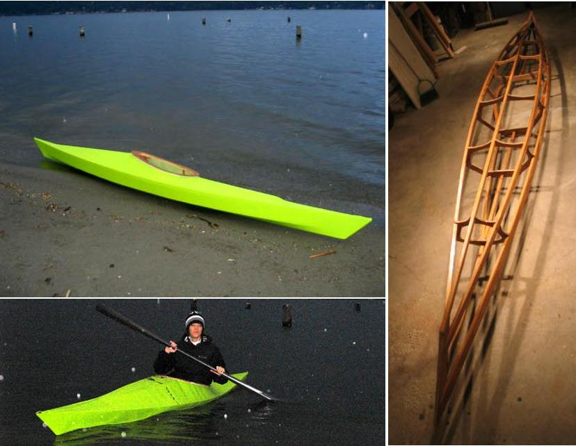

| Sea Tour 15-R by Paul Clayton (US) | Menu Previous Page Next Page |
|

Paul, from Seattle, Washington has completed a wood frame Sea Tour 15-R. He raised the forward deck height a couple of inches for easier entry / exit. The nylon skin is coated in urethane with a Caribbean Green tint.
|
|